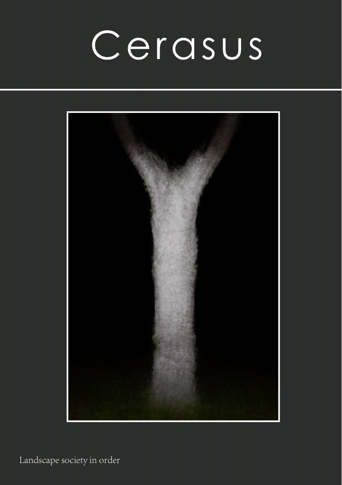

Hezi Portfolio
Cerasus
Landscape society in order
以“被涂白的树”为线索，将樱花树干标记转化为一组可观看、可凝视、可被重新理解的视觉秩序。

Portfolio / 作品集
CerasusLandscape society in order
A web edition of Hezi Portfolio, translated from the original PDF into a responsive online portfolio layout.
PART ONE
第一部分发现
Close observations of painted trunks, isolated from the larger landscape and read as repeated signs.
PART TWO
第二部分观看
The viewing distance shifts: the tree bodies become figures, postures, and interfaces between order and growth.
PART THREE
第三部分凝视
Night images turn the white-painted trunks into luminous objects, separating them from the surrounding dark field.
PART FOUR
第四部分规训
Blurred symbols and icons question how functional markings become visual discipline and collective memory.
PART FIVE
第五部分重视
The work returns to the wider landscape, placing individual signs back into the ordered environment.